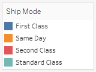

Additional Shelves, Legends, Cards, and Controls:
Some shelves, legends, cards, or controls are only displayed as a result of things that you do as you work with views. For example, the Color legend is only displayed when there is a field on Color.

Workbench provides controls for moving or otherwise customizing these elements of the view.
The following list describes each such shelf, legend, card, or control.
- Measure Values Shelf– Measure Values is a special field that always appears at the bottom of the Measures area of the Data pane and contains all the measures of your data collected into one field. Workbench automatically adds Measure Values to the view when multiple measures are sharing the same axis. When Measure Values is in the view, Workbench displays a Measure Values shelf that shows which measures are being included. You can add measures to or remove measures from this card.
- Color Legend – Shows how colors are allocated when there is a field on Color.
- Shape Legend – Shows how shapes are allocated when there is a field on Shape.
- Size Legend – Shows how sizes are allocated when there is a field on Size.
- Map Legend – Shows the legend for the symbols and patterns on a map. The map legend is not available for all map providers.
- Parameter Controls – A separate parameter control is available for every parameter in the workbook.
- Title – A title is displayed by default for every view. The default title is the sheet name. Double-click a title (Control-click on a Mac) to edit it.
- Caption – Choose Show caption from the Worksheet menu to display a caption for the view.
- Summary Card – Choose Show summary from the Worksheet menu to display a summary card for the view.
- Page Control – Provides options for navigating through pages when there is a field on the Pages shelf.
Created with the Personal Edition of HelpNDoc: Qt Help documentation made easy